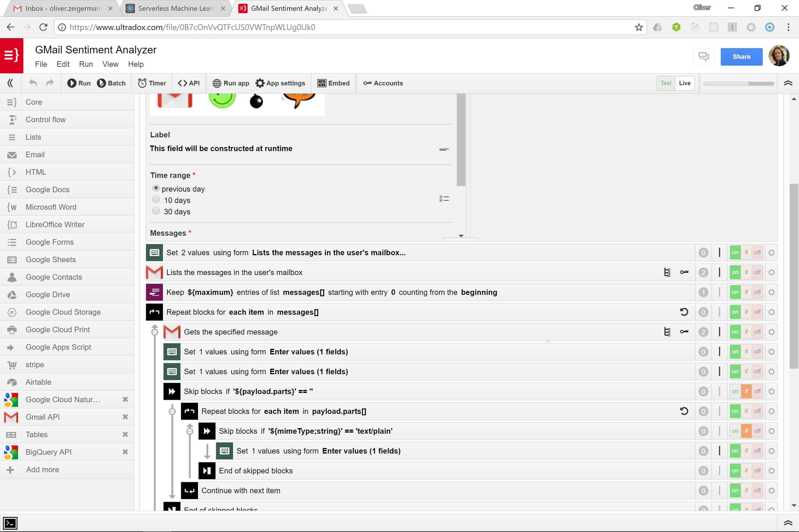
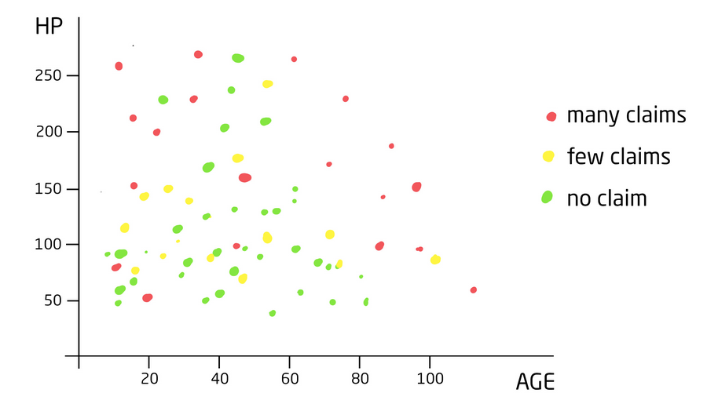
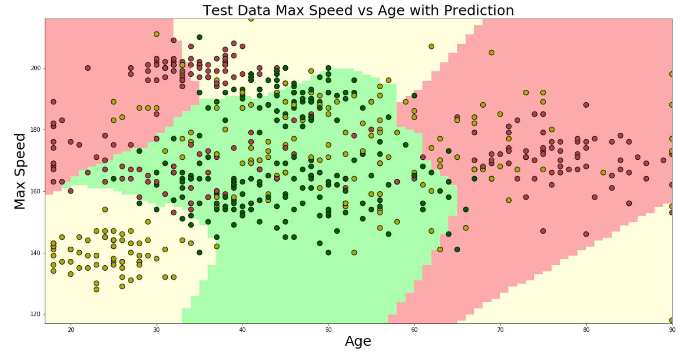
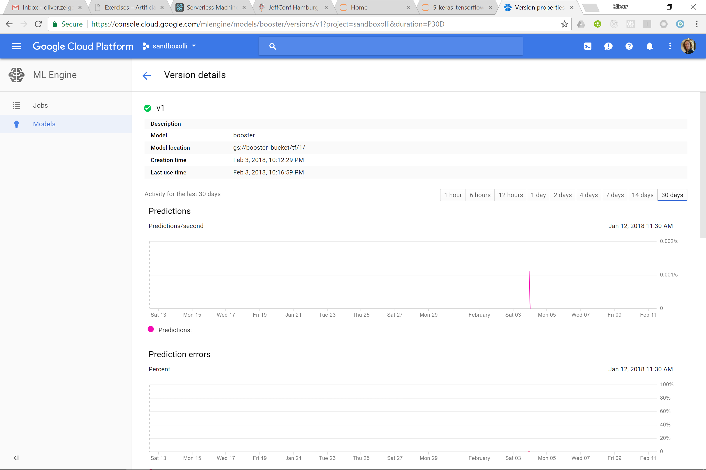

Serverless Machine Learning
JeffConf - Hamburg - 2018
Part 1
Using a pre-built 3rd party service
How to use a sentiment analysis API to find out which of your emails should be answered first
Cloud Natural Language: Google's ML API for Speech

Using Ultradox Serverless Workflows
Handles all authentication and API issues
Using the generated app
Calling the API from Ultradox Serverless Workflow
Part 2
Train and Deploy a TensorFlow model
Predict the category of a new customer running on Google Cloud ML
Customer Data
How would you rank me (47) for a car with 56 HP?
Create TensorFlow model by applying alchemy
inputs = Input(name='input', shape=(2, ))
x = Dense(100, name='hidden1', activation='relu')(inputs)
x = Dense(100, name='hidden2', activation='relu')(x)
x = Dense(100, name='hidden3', activation='relu')(x)
predictions = Dense(3, name='softmax', activation='softmax')(x)
model = Model(input=inputs, output=predictions)
model.compile(optimizer='adam',
loss='categorical_crossentropy',
metrics=['accuracy'])
model.fit(X_train, y_train_categorical, epochs=1000)
Buzzword alarm: Deep Learning
Training Results
77% accuracy on test data (pretty good)
Deployment
Usage
{"inputs": [ 160, 47, 10]}
gcloud ml-engine predict --model=booster --version=v1
--json-instances=./sample_insurance.json
# SCORES, likelihood of category red, green, yellow
# [0.003163766348734498, 0.9321494698524475, 0.06468681246042252]
Wrapup
- Prebuilt ML Services are at your finger tips
- If standard services are not sufficient, train your custom model with free software
- Models can be deployed to managed clouds (Google Cloud ML, Microsoft Azure) with ease
Ping me for questions / help / comments: http://zeigermann.eu / @DJCordhose / floreysoft